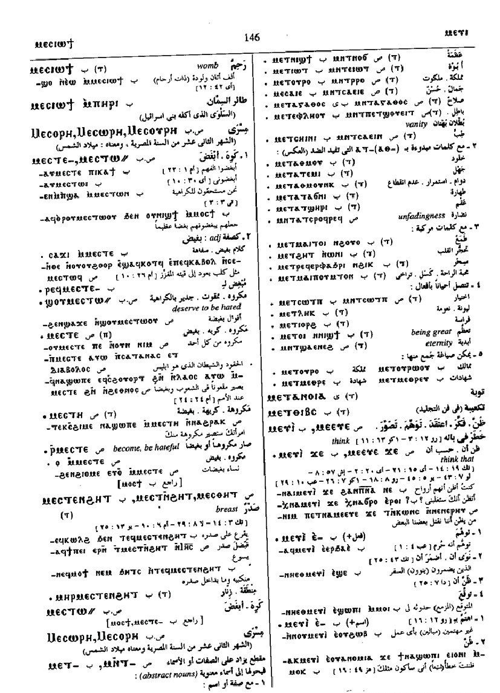
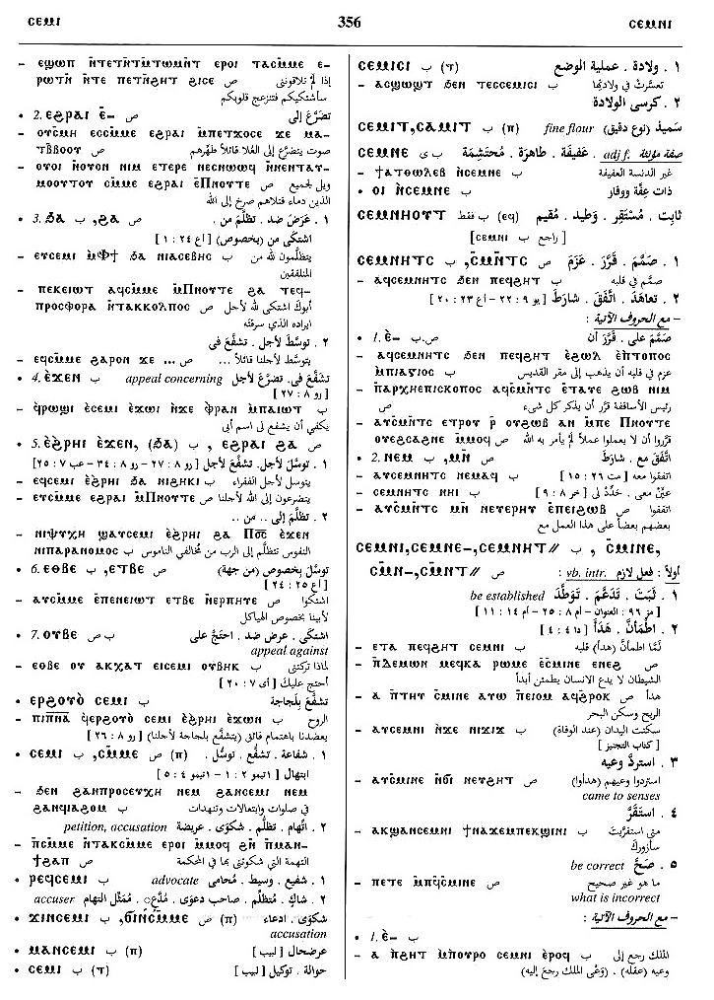

(verb)
intr: bear, bring forth [τικτειν,
γενναν]
tr: bear young
qual: be newly delivered, give suck
tr: bear young
qual: be newly delivered, give suck
Crum: 184b
Dawoud: 155a-155b, 138b, 138b, 138b, 145b, 145b, 145b-146a, 146a, 146a, 165b, 152a, 152a-152b, 356b, 60b
Dawoud: 155a-155b, 138b, 138b, 138b, 145b, 145b, 145b-146a, 146a, 146a, 165b, 152a, 152a-152b, 356b, 60b
(S, A, sA)
ⲙⲓⲥⲉ
(B, F) ⲙⲓⲥⲓ
(O) ⲙⲉⲥⲓⲉ
(S, B) ⲙⲁⲥ-
(S, A, B, F) ⲙⲉⲥ-
(S) ⲙⲉⲥⲧ-
(S, A) ⲙⲁⲥⲧ=, ⲙⲉⲥⲧ=
(S, B) ⲙⲁⲥ=
(O) ⲙⲓⲥⲧ=
(S) ⲙⲟⲥⲉ+
(B) ⲙⲟⲥⲓ+
(S, A, B, F) p c ⲙⲁⲥ-
(S, A, F) p c ⲙⲉⲥ-
(B, F) ⲙⲓⲥⲓ
(O) ⲙⲉⲥⲓⲉ
(S, B) ⲙⲁⲥ-
(S, A, B, F) ⲙⲉⲥ-
(S) ⲙⲉⲥⲧ-
(S, A) ⲙⲁⲥⲧ=, ⲙⲉⲥⲧ=
(S, B) ⲙⲁⲥ=
(O) ⲙⲓⲥⲧ=
(S) ⲙⲟⲥⲉ+
(B) ⲙⲟⲥⲓ+
(S, A, B, F) p c ⲙⲁⲥ-
(S, A, F) p c ⲙⲉⲥ-
| (S, A, B, F) ― (ⲡ) | (noun male)
offspring, generation [γεννησισ]882 |
Crum: 185a | |||||||
| ― + gen ⲛ-909 | |||||||||
| ⲃⲗⲗⲉ ⲙⲙ. | born blind910 | ||||||||
| ϭⲁⲗⲉ ⲙⲙ. | born lame911 | ||||||||
| ⲙⲁ ⲙⲙ. | birth-place912 | ||||||||
| ⲟⲩⲟⲉⲓϣ ⲙⲙ. | time of birth913 | ||||||||
| ϣⲟⲣⲡ ⲙ., ϣⲣⲡ ⲙ., ϣⲟⲣⲡ ⲙⲙ., ϣⲣⲡ ⲙⲙ., ϣⲁⲙ. | first born child, or bearing first child914 | ||||||||
| ⲙⲛⲧϣⲟⲣⲡ ⲙⲙ. (&c) | right, position of firstborn915 | ||||||||
| ⲣ ϣⲣⲡ ⲙ. | give birthright916 | ||||||||
| ϫⲱⲙ ⲙⲙ. | birth-book917 | ||||||||
| ϩⲟⲟⲩ ⲙⲙ., ϩⲟⲩⲙ. | birthday918 | ||||||||
| (S) ⲙ. ⲉϩⲣⲁⲓ | bring forth [εκζειν]883 | Crum: 185b | |||||||
| (B) ⲉⲣ ⲙⲉⲥ | meaning similar884 | ||||||||
| (S) ϯ ⲉⲙ. | meaning similar885 | ||||||||
| ⲙⲁⲥ-, ⲙⲉⲥ- | p.c., bearing, producing886 | ||||||||
| (S, B) ⲣⲉϥⲙⲓⲥⲉ, ⲣⲉϥⲙⲓⲥⲓ | one who bears887 | ||||||||
| (S) ⲙⲛⲧⲣⲉϥⲙ. | bearing, birth888 | ||||||||
| (S) ⲁⲧⲙ. (adj.) | (adjective)
unborn889 |
||||||||
| (B) ⲙⲉⲧⲁⲧⲙ. | barenness890 | ||||||||
| (S, B) ϭⲓⲛⲙ., ϫⲓⲛⲙ. | birth, generation [γενεσισ]891 | ||||||||
| (O) ⲙⲉⲥⲓⲉ | 892 | ||||||||
| (S)
ⲙⲏⲥⲉ
(ⲧ)
(B) ⲙⲏⲥⲓ (ⲧ) |
(noun female)
one with child child-birth893 |
||||||||
| (S, B)
ⲙⲁⲥ
(A, F) ⲙⲉⲥ (F) ⲙⲏⲥ |
young, mostly of animal or bird [νοσσοσ]894 | ||||||||
| (S)
ⲙⲁⲥⲉ
(ⲡ)
(Sa, A) ⲙⲉⲥⲉ (ⲡ) (B, F) ⲙⲁⲥⲓ (ⲡ) (F) ⲙⲉⲥⲓ (ⲡ) |
(noun male)
young animal, esp calf, bull895 |
Crum: 186a | |||||||
| (S, A)
ⲙⲏⲥⲉ
(ⲧ)
(S) ⲙⲏⲏⲥⲉ (ⲧ) (B) ⲙⲏⲥⲓ (ⲧ) (F) ⲙⲏⲥⲏ (ⲧ) |
(noun female)
offspring of money, usury, interest896 |
||||||||
| (S, A)
ϯ ⲉⲙ.
(B) ϯ ⲉⲑⲙ. |
give at interest [δανιζειν]897 | ||||||||
| (S, A)
ϫⲓ ⲙ.,
ϫⲓ ⲉⲙ.
(B) ϭⲓ ⲉⲑⲙ. |
take interest898 | ||||||||
| (B) ⲧⲁⲗⲉ ⲙ. | add interest to loan899 | ||||||||
| ⲁⲧⲙ. | without interest900 | ||||||||
| (B) ⲙⲉⲥⲓⲱϯ, ⲙⲏⲥⲓⲱϯ (ⲧ) | (noun female)
womb nursing, having given birth901 |
||||||||
| (S, B) ⲙⲉⲥ ϩⲛⲏⲓ, ⲙⲉⲥ ϧⲉⲛⲏⲓ (ⲡ/ⲧ) | (noun male/female)
one born in the house [οικογενησ]902 |
Crum: 186b | |||||||
| (S, B)
ⲙⲉⲥⲟⲣⲏ
(noun)
(S, B) ⲙⲉⲥⲱⲣⲏ (noun) (S, B) ⲙⲉⲥⲟⲩⲣⲏ (noun) (S) ⲙⲉⲥⲟⲣⲉ, ⲙⲉⲥⲟⲩⲣⲉ, ⲙⲏⲥⲟⲩⲣⲉ, ⲙⲏⲥⲟⲩⲣⲓ, ⲙⲏⲥⲱⲣⲏ, ⲙⲟⲩⲥⲱⲣⲏ, ⲙⲟⲩⲥⲟⲣⲉ, ⲙⲓⲥⲟⲩⲣⲏ, ⲙⲉⲥⲥⲟⲩⲣⲓ (&c) |
(noun)
name of 12th month, Birth of Re (Sun) [Μεσορη]903 |
||||||||
| (B) ⲥⲉⲙⲓⲥⲓ (ⲧ) | (noun female)
lit birth-place, seat, so childbirth, parturition904 |
||||||||
| (S)
ⲙⲉⲥⲓⲟ,
ⲧⲙⲉⲥⲓⲟ
(A) ⲧⲙⲁⲥⲉⲓⲟ (B) ⲑⲙⲉⲥⲓⲟ (B) ⲑⲙⲉⲥⲓⲉ- (S) ⲙⲉⲥⲓⲟ= |
(verb)
tr: bring to birth, act midwife [μαιουσθαι]905 |
||||||||
| (S)
ⲙⲉⲥⲓⲱ,
ⲙⲉⲥⲓⲟ
(ⲧ)
(A) ⲙⲉⲥⲉⲓⲟⲩ (ⲧ) |
(noun female)
midwife, nurse [μαια]906 |
||||||||
| (S) ⲣ ⲙ. | bring to birth907 | ||||||||
See also:
| view | (S, sA) ϫⲡⲟ {for ⲧϣⲡⲟ} (A) ⲧⳉⲡⲟ (B) ϫⲫⲟ (F) ϫⲡⲁ (S, A, F) ϫⲡⲉ- (A) ⲧⳉⲡⲉ-, ⲧⳉⲡⲟ- (S, sA) ϫⲡⲟ- (sA, F) ϫⲡⲁ- (F) ϣⲡⲁ- (B) ϫⲫⲉ-, ⲧϩⲫⲉ- (S) ϫⲡⲟ= (A) ⲧⳉⲡⲁ= (sA, F) ϫⲡⲁ= (B) ϫⲫⲟ= (S) ϫⲡⲁⲉⲓⲧ+ (B) ϫⲫⲏⲟⲩⲧ+ | (verb) tr:
― beget, bring forth of male or female (causative of ϣⲱⲡⲉ) [γενναν, τεκειν] ― acquire [κτασθαι, ποιειν]6 |
| view | (S, B) ⲟⲩϣⲁⲡ (F) ⲟⲩϣⲉⲡ (NH) ⲟⲩϣⲓⲡ {ext codex II - The Apocryphon of John; 106; 3; 34; ⲡⲉⲧⲟⲩϫⲓ ⲙⲙⲟϥ ⲅⲁⲣ ⲉⲡⲟⲩϣⲓⲡ ⲡⲉ; Ext} | (noun male) loan, always c preceding ⲉ-375 |
| view | (S) ⲡⲟⲣⲕ, ⲡⲟⲣⲉⲕ (Sf, A, F) ⲡⲁⲣⲕ (B) ⲫⲟⲣⲕ | (noun male) B once
foal, calf with ⲙⲁⲥ- SAB, ⲙⲉⲥ- S mule [ημιονοσ, ρεδη]1278 |
| view | (S) ⲃⲟⲉⲓⲧ (Sa) ⲃⲁⲓⲧ | (noun male/female) ox or cow [βουσ, τραγοσ]607 |
| view | (S, A, B) ⲉϩⲉ (F) ⲁϩⲏ (S) plural: ⲉϩⲟⲟⲩ, ⲉϩⲏⲩ (S, A, B) plural: ⲉϩⲉⲩ (sA) plural: ⲉϩⲁⲩ (B) plural: ⲉϩⲱⲟⲩ, ⲉϩⲉⲟⲩ (F) plural: ⲁϩⲁⲩ, ⲏϩⲁⲟⲩ | (noun male/female) cow [βουσ, βουκολιον]682 |
| view | (S, A) ⲃⲁϩⲥⲉ (B) ⲃⲁϩⲥⲓ (F) ⲃⲉϩⲥⲓ | (noun female) heifer [δαμαλισ]2742 |
| view | (S, F) ⲥⲏϭ (A) ⲥⲓϭ, ⲥⲓⲉⲓϭ (B) ⲥⲏϫ (S) female: ⲥⲉⲉϭⲉ | (noun male) foal of ass, horse [πωλοσ]1548 |
| view | (S) ⲕⲧⲏⲣ | (noun male) calf [μοσχαριον, δαμαλισ]880 |
| view | (S, sA) ⲧⲃⲛⲏ (A) ⲧⲃⲛⲓ (B, F) ⲧⲉⲃⲛⲏ (F) ⲧⲩⲃⲛⲏ (S) plural: ⲧⲃⲛⲟⲟⲩⲉ, ⲧⲉⲃⲛⲏⲟⲩ, ⲧϥⲛⲏⲩ, ⲧⲃⲛⲉⲩ (Sa, A) plural: ⲧⲃⲛⲉⲩⲉ (Sa) plural: ⲧⲃⲛⲏⲩⲉ (A) plural: ⲧⲃⲛⲉⲟⲩⲉ (sA) plural: ⲧⲃⲛⲁⲩⲉ (B) plural: ⲧⲃⲛⲱⲟⲩⲓ (F) plural: ⲧⲃⲛⲁⲩⲓ, ⲧⲃⲛⲁⲟⲩⲉⲓ, ⲧⲉϥⲛⲁⲩⲉⲓ | (noun male) beast, domestic animal [κτηνοσ, τετραπουσ, ζωον, υποζυγιον]712 |
| view | (S, A) ϩⲧⲟ, ϩⲧⲱ (S) ⲉϩⲧⲟ (B) ϩⲑⲟ (F) (ⲉ)ϩⲧⲁ (A) ϩⲧⲉ- (S) female: ϩⲧⲱⲣⲉ, ϩⲧⲟⲟⲣⲉ (sA) female: ϩⲧⲱⲣⲏ, ϩⲧⲟⲣⲏ (B) female: (ⲉ)ϩⲑⲟⲣⲓ (F) female: (ⲉ)ϩⲧⲁ(ⲁ)ⲣⲓ (S, F) plural: (ⲉ)ϩⲧⲱⲱⲣ (S) plural: (ⲉ)ϩⲧⲱⲱⲣⲉ (S, A, F) plural: ϩⲧⲱⲣ (B) plural: (ⲉ)ϩⲑⲱⲣ, ϩⲑⲟⲣ (A) plural: ϩⲧⲟⲩⲣⲉⲩⲉ | (noun male) horse [ιπποσ]
f, mare [ιπποσ, φοροσ]2303 |
| view | (S, sA) ⲉⲓⲱ (S) ⲉⲉⲓⲱ, ⲉⲓⲟⲩ, ⲉⲟⲩ (A) ⲓⲟⲩ (S, B, F) ⲓⲱ (S, B) ⲓⲁⲱ, ⲉⲱ (S) ⲉⲓⲁ-, ⲓⲁ- (A, F) ⲉⲓⲁ- (B) ⲓⲁ- (S) plural: ⲉⲟⲟⲩ, ⲉⲱⲟⲩ (S) female: ⲉⲓⲱⲟⲩⲉ, ⲉⲟⲟⲩⲉ (A) female: ⲉⲁⲩⲉ (B) female: ⲉⲉⲩ, ⲉϩⲉⲩ | (noun male/female) ass [ονοσ]693 |
| view | (S) ⲉⲩⲱ, ⲉⲟⲩⲱ (S, B) ⲟⲩⲱ (B) ⲁⲟⲩⲱ (F) ⲁⲩⲱ, ⲉⲓⲟⲩ | (noun female) pledge, surety [ανεχυρασμα]678 |
Crum: 184,185,186

184

185

186
Dawoud: 155a-155b,
138b, 138b, 138b,
145b, 145b, 145b-146a,
146a, 146a, 165b,
152a, 152a-152b,
356b, 60b

155

138

145

146

165

152

356

60